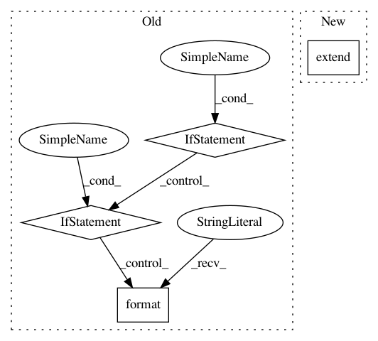

b903f8ec84d21253a1eebff9b29519a9e934f254,examples/tox21/train_tox21.py,,main,#,40
Before Change
repeat=False, shuffle=False)
accfun_mode = args.accfun_mode
if accfun_mode == 0:
accfun = F.binary_accuracy
elif accfun_mode == 1:
from sklearn import metrics
def get_1d_numpy_array(v):
if isinstance(v, chainer.Variable):
v = v.data
return cuda.to_cpu(v).ravel()
def accfun(y, t):
// -- calc & report ROC-AUC ---
// note that this is dirty hack implementation.
// roc auc is calculated per minibatch, and mean is taken to show
// PrintReport. This calculation is not same as total batch roc auc
// calculation.
t_data = get_1d_numpy_array(t)
y_data = get_1d_numpy_array(y)
y_data = y_data[t_data != -1]
t_data = t_data[t_data != -1]
try:
roc_auc = metrics.roc_auc_score(t_data, y_data)
reporter.report({"roc_auc": roc_auc}, classifier)
except ValueError as e:
// When `t_data` only contains one label (ex. only 0), roc auc
// cannot be calculated and ValueError is raised.
// This implementation just ignores this minibatch for roc auc
// calculation.
pass
// --- calc ROC-AUC end ---
return F.binary_accuracy(y, t)
else:
raise ValueError("Invalid accfun_mode {}".format(accfun_mode))
classifier = L.Classifier(predictor_,
lossfun=F.sigmoid_cross_entropy,
accfun=accfun)
if args.gpu >= 0:
After Change
elif eval_mode == 1:
train_eval_iter = I.SerialIterator(train, args.batchsize,
repeat=False, shuffle=False)
trainer.extend(ROCAUCEvaluator(
train_eval_iter, classifier, predictor=predictor_,
device=args.gpu, converter=concat_mols, name="train"))
trainer.extend(ROCAUCEvaluator(
val_iter, classifier, predictor=predictor_,
device=args.gpu, converter=concat_mols, name="val"))
trainer.extend(E.PrintReport([
In pattern: SUPERPATTERN
Frequency: 3
Non-data size: 4
Instances
Project Name: pfnet-research/chainer-chemistry
Commit Name: b903f8ec84d21253a1eebff9b29519a9e934f254
Time: 2017-12-21
Author: corochannz@gmail.com
File Name: examples/tox21/train_tox21.py
Class Name:
Method Name: main
Project Name: wenwei202/iss-rnns
Commit Name: c0095111d1f19476f56ea76854d9e0b38e50b38f
Time: 2016-10-26
Author: seominjoon@gmail.com
File Name: my/utils.py
Class Name:
Method Name: process_tokens
Project Name: pantsbuild/pants
Commit Name: 53c3e300aa23a1568789925d9f103eac877edc46
Time: 2017-03-02
Author: stuhood@twitter.com
File Name: tests/python/pants_test/engine/examples/sources.py
Class Name: Sources
Method Name: __init__